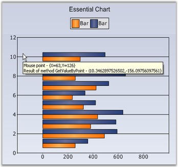

Chart Coordinates by point
GetValueByPoint()
Using the GetValueByPoint method, the mouse position in chart client-coordinates can be converted into a corresponding Chart Coordinate in terms of x, y values.
The below figure shows a chart where the tooltip text for each point shows the corresponding x, y value at that position.

Figure 361: Chart displaying Coordinate value at a Client Point
Code snippet for the above sample
|
[C#]
// Chartcontrol mouse move event. private void chartControl_MouseMove(object sender,System.Windows.Forms.MouseEventArgs e) { ChartPoint chpt = this.chartControl.ChartArea.GetValueByPoint( new Point( e.X, e.Y ) ); string text = "Result of method GetValueByPoint - {" + chpt.X.ToString() + "," + chpt.YValues[0].ToString() + "}" ; toolTip.SetToolTip( chartControl, text ); } |
|
[VB.NET]
' ChartControl mouse move event. Private Sub chartControl_MouseMove(ByVal sender As Object, ByVal e As System.Windows.Forms.MouseEventArgs) Dim chpt As ChartPoint = Me.chartControl.ChartArea.GetValueByPoint(New Point(e.X, e.Y)) Dim [text] As String = "Result of method GetValueByPoint - {" + chpt.X.ToString() + "," + chpt.YValues(0).ToString() + "}" toolTip.SetToolTip(chartControl, text) End Sub |
GetPointByValue()
The GetPointByValue method does the opposite of the above - given a chart coordinate it returns the client co-ordinate corresponding to that chart point.